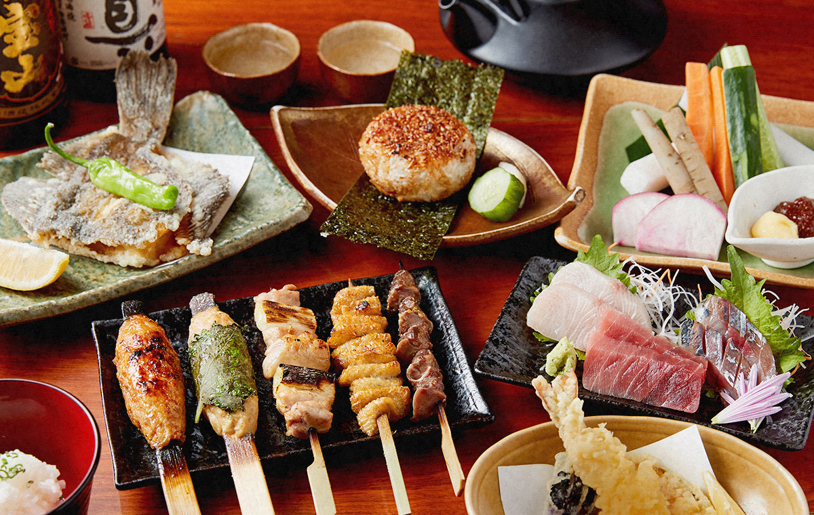
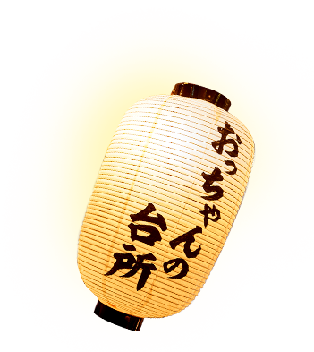
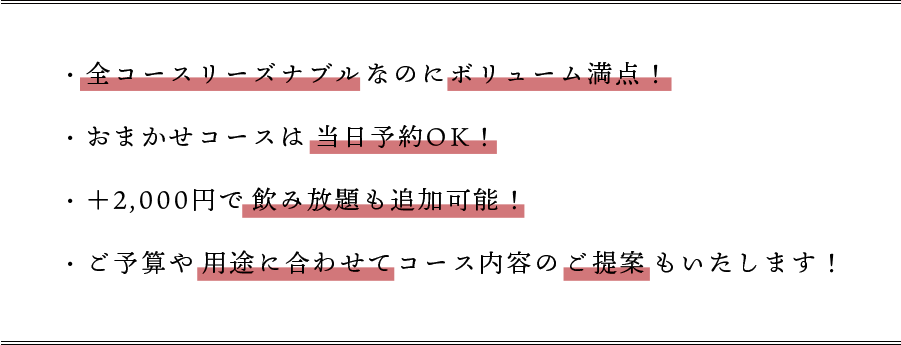
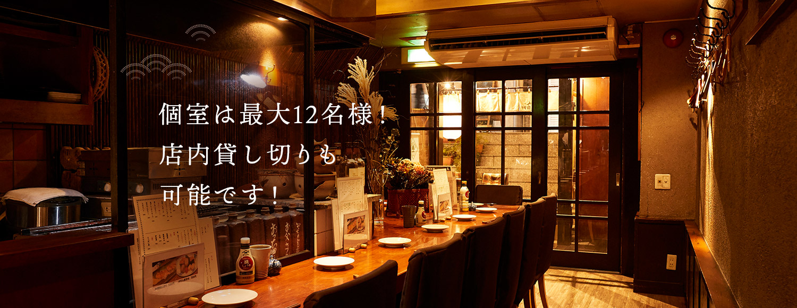
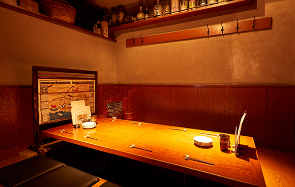

吉祥寺駅の女子会、宴会、飲み会に人気の隠れ家居酒屋。個室で安いコース、飲み放題





吉祥寺駅で女子会ディナー、宴会、飲み会、歓送迎会、忘年会、
新年会におすすめの隠れ家居酒屋「おっちゃんの台所」。
お集りにも解散にも便利な吉祥寺駅から徒歩6分の所にお店を構えています。ゆったりとしたカウンター席が人気の当店ですが、お店の奥に一つだけ、隠れ家のような小上がり個室がございます。他のお客様を気にする必要がなく、プライベートなお集まりや、グループでの打ち上げに最適です。ご宴会には、人気の商品をリーズナブルに楽しめるおっちゃんコース3,000円（税込み）をおすすめしています。その他、用途やご予算に合わせて飲み放題など臨機応変に対応いたしますので、どうぞ気軽にご相談ください。一人飲みにも最適なお得な2,000円（税込み）コースもお見逃しなく。お一人でもデートでも、はたまたご宴会でも、様々なシーンで楽しめる当店のコースをどうぞお楽しみください。


※価格は全て税込みです。
吉祥寺駅の居酒屋「おっちゃんの台所」の魅力を知るならこのコース！
自慢の焼鳥盛り合わせから旬のお刺身3点盛り、〆の炭火焼きおにぎりまで
人気のメニューが目白押しです。ご宴会はもちろん、
初めてご来店される方にもおすすめのコースとなっております。
またコース内容をお任せいただければ、当日のご予約も可能です。
注文に迷ったら是非こちらのお得なコースをご利用ください。
-
コース内容（一例）
《全5品》
おっちゃんコース - 3,000円
- ・鬼おろしと季節天ぷら
- ・辛味噌キャベツ
- ・お刺身3点盛り
- ・焼き鳥の盛り合わせ5品
- ・炭火焼きおにぎり
普段のお食事や、一人飲みにも
おすすめのお得な焼き鳥コースもございます。
季節の天ぷらとサラダ、焼き鳥の盛り合わせ、〆の焼きおにぎりの4品を楽しめ、
程よいボリューム感がある、大変お得なコースです。
-
コース内容（一例）
《全4品》
焼き鳥コース - 2,000円
- ・鬼おろしと季節天ぷら
-
・わかめと新玉ねぎのサラダ
または
春菊と新玉ねぎのサラダ - ・焼き鳥の盛り合わせ5品
- ・炭火焼きおにぎり
上記の定番コース以外にも、寒い時期には、心も体も温まる鍋コースや、
暑い時期には体を冷やす夏野菜中心のコースなど、
季節限定の特別なコースもご用意しております。
詳しくはお電話にてお問い合わせください。
＋2,000円で飲み放題も
追加していただけます。
飲み放題のお客様にはドリンクの
持ち込み料をいただいておりませんので、
「ワインを持ち込みたい」などご希望が
ございましたら、ご予約時に
スタッフまでお伝えください。


木の温もりとやわらかな明かりで落ち着いた
雰囲気の店内には、周りを気にせずに宴会を楽しめる
小上がりの個室と、ゆったりとしたカウンターのお席を
ご用意しております。店内貸し切りも可能ですので、
女子会、宴会、飲み会、歓送迎会、忘年会、新年会など
大人数でのご利用をご希望のお客様は、
どうぞお早めにご相談ください。